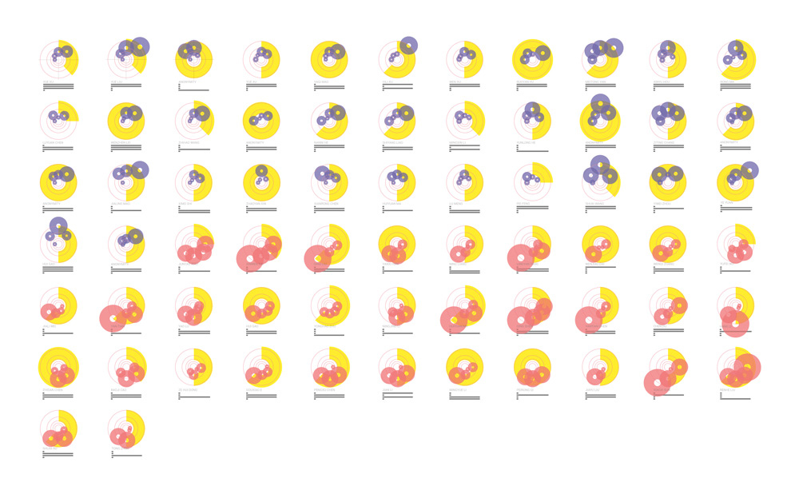
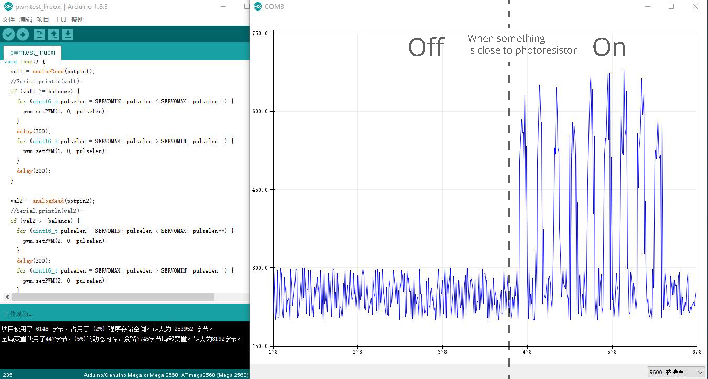
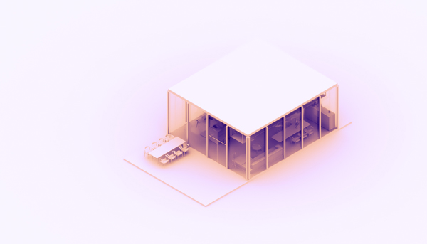
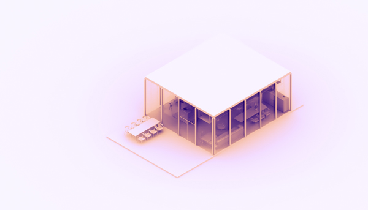

:00, , Beijing
:] Hi! This website is still under construction.
More projects to come before 8th December
A piece of space is an installation that achieve "space transfer" by altering the state of liquid in it. By designating any cities on the earth, this installation will alter the state of the liquid within it to transform the state of itself, to be a “part” of the corresponding city, to convey the real-time state of the atmosphere to you. The most vivid and direct way to sense a city is through its weather. This installation enables us to acquire this: the liquid within it feels cold by hands though it is windless and warm outside When it is windless and warm, and you might see layers of waves as if they were driven by the wind from another space. The sea water within the installation feels cold by hands; it lifts great wave layer upon layer as if it was driven by the wind from another space. By hiding the details of mechanical parts, it enables people to shift between places so that they can achieve a mimic sense of another space in real time.

Taken in Jægersborg Dyrehave last winter, 6pm
There are times when we miss a city, missing its details and people living there. Whenever weather changes, anchoring effect sometimes lingers on me obviously——recalling what I was doing this time last year, the missing sense to that city life and friends enhances. “Does it become cold there now?”, Sometimes I would check the weather of that city on my cellphone, but it does not relieve the sentiment of missing. The distance itself is still something that cannot be ignored. The real feeling of being in that city at the same moment is quite precious for me even though it fleets quickly.
Aultar, an alien from planet Zianus, was going to visit the earth. Before his leaving, he took away a piece of place away from his place.Days after his landing, he stumbled across a mysterious container. As Aultar poured what he brought from his planet into the container, he felt amazed that the surrounding in earth gradually began to change, which shifted into the environment similar to his mother planet. Autar felt so happy and started to appreciate the stars and universe as if he was back to his Zianus.

Left figure: Beilun Port and its tidal statistics since January in 2017.
Each wavy line comes from a weekly data of tide from Beilun Port,layers of wavy lines ultimately run together. The final curve certifies the passing of time on the spot.Also, each port has its one and only curve, a randomly chose port can be finalized as the installation. People can have their unique model by choosing his/her favourate port


The final one has been improved from the former ones, with more consideration on the hardware volume and layout structure since the mechanical and function-achieving hardware should be concealed.

Materials that have been experimented with: ○ aluminum plate ○ acrylic plate ○ PVC ○ ABS Materials that have been adopted finally: ○ aluminum plate○ high-temperature resistant ABS ○ Silver paint spraying Reasons: ○ aluminum plate High Conductivity ○ ABS is easier to cut, polish and weld

I have tried two methods to get real-time weather data on the Internet: ❶ Getting real-time weather data by labview

Labview Screenshot


Extract data from Webpage, parse data and extract data from JSON


Main function models including cooling module, heating module, waving module and humidifier module. 1 Ceramic heater band: to control heating by relays 2 Cooler module: to control cooling by relays 3 Temperature sensors: to monitor the temperature of liquid 4 Atomization chip module: to achieve humidification and atomization 5 Motor module: to control the movement and create waves 6 4 groups of relay modules 7 Bread board 8 Arduino: ESP8266 WIFI module 9 Power module: including electric current of 12V3A, 12V1A as well as 5V.

Technology testing includes the follows:
○ Test of getting weather data ○ The installation and test of cooler ○ Heater band testing ○ Humidifier testing ○ Thermometer testing ○ Water wave testing
Testing results:


Dynamic logo | Used Cinema 4D
The dynamic logo is a piece of sea with waves in motion. At the same time, it looks like the surface of liquid in installation when you choose a windy city.It could be recognized from different angles by its blue color and realistic waves.
"The tides are in our veins, we still mirror the stars, life is your child, but there is in me
Older and harder than life and more impartial, the eye that watched before there was an ocean." - Robinson Jeffers

Maomao is an acupressure-based toy for cats, which helps satisfy a cat’s sexual needs and calm them down. By reducing cats mating call, it enables cats and residents to live in a harmonious and ideal environment and ecosystem.Recently there is a sensational news which reports: 5 kittens were brutally killed with blood-holes all over, as residents in Dalian no longer endure their rutting howl. (News resource:info.3g.qq.com). The news isn’t the only one of its kind. Along with the further joyous relationship between people and domestic pet, the relationship between city residents and abandoned stray cats has worsened over the years because of its growing population. Stray cats’ population in Beijing is still estimated to be around 5.12 million after 10 years of controlling treatment since 2008, it’s still an annoying problem to both the government and residents. According to Charles Darwin’s saying, behavioral interactions do exist between species. When living with the human being, cats have acquired skills such as asking for food, communication and using tools, and as human we create this sex toy for cats, leading benefits for both sides.
⇥ A story about Maomao
Imagine this : The daytime noises have faded away, you’ve finished watching the news or the late show and finally got to sleep, and then feral cats begin to howl, they are screaming louder and louder... You try to sleep, but those creepy screaming continually annoys you.
Until the invention of Maomao, a cat sex toy, things finally become different ……
(Right)The video is a short stop-motion about the story


What on earth worsens the relationship between human and feral cats? What’s the attitudes of people?
I did a series of research on community’s attitudes on feral cats, including:
○ Interview
○ Survey
○ Field Study
○ Affinity Diagram
❶ Research Synthesis - Samples visualization

Figure legends

Samples visualization
❷ Research Synthesis - Overall result

The conclusion of above 69 questionnaires shows that half of the people had seen feral cats in the past fortnight, and half of them expressed their dislike towards such animals, mainly because of their night-time howls; another reason lies within theirs potential and infectious diseases, leading a contamination problem. However according from above graph, attacks from such animals rarely occurs.
The other half of people who liked cats expressed their enjoy for the creatures’ cuteness (85%), while 30% of them thought feral cats could help in maintaining eco-balance, increase biodiversity and act as pest predators (rats).
As to the approaches and countermeasures to the feral cats, great differences exits between two sides .(differences details unrelated) First, ways of asexualization are both agreed on, which explains why TNR (Trap, Neuter, and Return) is internationally accepted. However, only half of them (20%) accepts euthanasia onto the animals. Moreover, half of the persons that are surveyed think that we should provide shelters or more humanized help to feral cats.
In conclusion, 50% of people expressed negative emotions towards feral cats, with “night-time howls” being the main reason. As to measurements to deal with them, neutering is still highly accepted by the public, while acceptance rate on euthanasia (20%) is higher than expected. More than half of participants think we should build shelters for the animals and treat them more humanely.

Study on breeding and behavior: stages of feline estrus
After a literary studying, I closely observed my roommate’s cat’s behavior on different stages of the estrus (as shown in picture above).
The frequency and time for a cat to behave in heat is of much uncertainty, but in most cases, a cat will be very aggressive while in heat, making it difficult to neuter. While most courtships are started by the female. Therefore, distracting the female’s attention, consuming her energy and satisfying her sexual impulses, can effectively reduce the times of a female to calls out for a male at night, eventually making a quieter environment, while maintaining the feline population from bursting.

(Above) Figure: acupressure
Apart from methods such as medicine and neutering, some pet owners choose to dissolve their pet cat’s sexual desires by themselves. I went through these methods by contacting pet owners, and got first hand material on how these methods were conducted.
Some owners would purchase cat toys with catnip, and latex-based toys for the cats to rub their bodies; some owners used Q-tip trick for their cats; But, the most sanitary way was Acupressure, by massaging certain areas on the cat’s hip (left figure).
According to pet owners’ past experience and field test, it is an effect method.
❸ Studies about cats population control
Research on feral and domestic cats population control
The diagram above shows conventional ways of dealing with cats in heat. While neutering is the prior way to deal with feral cats’ overpopulation in the long term, not every cat has the physical capability to receive a procedure like that. Also, temporary measurements such as the Q-tip trick and acupressure need the owner’s involvement, spending time and energy,which remains controversial.
After scanning SET factors, brainstorming and doing different research paths, I generated 6 opportunities:
➊ a highly effective system to trap feral cats
➋ a more effective system to execute Trap-Neuter-Return (TNR)
➌ an outdoor product to neuter cats safely
➍ a safer and more comfortable transportation equipment of cats
➎ shelters for feral cats
➏ products to release feline sexual impulses
➐ professional products to replace Q-TIP and Acupressure
With the help of weighted matrix, I shrunk the six of above opportunities into two.

Weighted matrix
Scenario 1 : Ming
Scenario❶:
Ming was the principal of property management of an residential area.
Lately he’s been receiving constantly the complaints about feral cats’ night-time howls, but without the technology and enough manpower, to lure or trap cats to perform TNR is difficult. And he couldn’t accept simply way of killing . He knew the cats often stayed in the corner of the underground car parking, but capturing them is not so easy unless the vast manpower involved.
Scenario 2 : Hong
Scenario❷:
Hong had raised some pet cats. A six-months old of them was in heat, another one was also rutting, being aggressive. The third cat was neutered recently, but still had hormones floating inside her.
The three cats followed her around all day, rubbing their bodies on everything, and making a lot of noise at night, Hong found it hard to sleep. She tried to distract them with several kinds of toys but they grew tired of them very soon. That brought much troubles to Hong, but she was reluctant to help them with Q-tip , she thought that embarrassing and time-consuming.
A feline sexual-release product here is produced to replace Q-tip and Acupressure, it should be functional, safe for users, and simple mechanism based. It should have soft and none-aggressive appearance. The main users are female feral cats and domestic cats, purchasers of the product are the pet owners and related departments responsible for feral cats control.
o What will it do?
For stray cats, this product aims to satisfying some female’s sexual need, making them less active in courtship, thus reducing howl and promoting the harmonious relationship between cats and humans.
For domestic cats, it helps：
- Those who are not suitable for neutering because of being aggressive;
- Those who are in heat but not physically sexually mature;
- Those who still have some ovarian tissue left after neutering, and comes on heat again;
- Those whose owners prefer not to put the animal through any kind of body modifications;
o Potential customers
For residential area managers, pet owners, pet shop owners and community volunteers
o Psychological descriptors and semantics
Material playful, soft, warn, erotic, with great texture, and less offensive that cats would like.


Two of sketches

Version 1 and 2: Used paperboard as base| Used woodenboard as base

Version 3 and 4: Used acrylic and cloth
Structure

Schematic
After several iterations, experiments and three unsuccessful models, a feasible solution has been found. (Above)Figures are schematic and structure illustrations. Light sensors on the top control the steering engine, which leads to minor movement of the top through connecting rod, simulating acupressure.

3D printing

Oval-shaped top
CAD drawing and laser cutting

The project is exhibited at Beijing Design Week during September 29 - October 8 in Galaxy SOHO.
Beijing Design Week, hosted by Ministry of Culture of the People’s Republic of China and the People’s Government of Beijing Municipality, is the largest design event in Asia.2017 Beijing Design Week was held in Beijing from September 21 to October 7 with over 2,000 participants including designers, agencies and academic experts, hundreds of registered media and more than 5 million visitors.

Credit:www.bjdw.org
Wisper is a project that collects endangered sounds from everyday life and the environment. The project integrates these sounds into an interactive installation and creates an environment in which visitors can feel them both visually and aurally. The project includes an acoustic and tactile playback device, the identity of Beijing and related prints, as well as the endangered sounds.
Wisper is a project that collects endangered sounds from everyday life and the environment. The project integrates these sounds into an interactive installation and creates an environment in which visitors can feel them both visually and aurally. The project includes an acoustic and tactile playback device, the identity of Beijing and related prints, as well as the endangered sounds. Some sounds are unique to a city. They are like poems without words and subtle rhythms which can awake people’s memories of the past. From the mild accent of the older generation, pigeon whistle to reading sound mixed with chirp, Beijing has many unique sounds that tell the story of the past, contain valuable information and highlight the elegance and charm of this city with long royal history. Today, in the rich acoustic environment, these sounds are fading away. By the end of 2016, there were 21.72 million permanent residents in Beijing. This city, like magnet full of opportunities, is still attracting more and more people. Culture, trend and the whole society are all being pushed forward by the huge population. Few people notice that the culture and blood of Beijing of the past 3,000 years has gradually dried up, and the sounds of YO-HEAVE-HO and Peking Opera may disappear unknowingly and eventually remain in the memory of old generation. Beijing may unfortunately become a huge machine without a real cultural core. .


One of sounds' wave & frequency spectrum

Posters in Galaxy SOHO
We have collected these endangered sounds with professional equipment in Beijing’s six famous places both in the past and now as sound materials in the project, which are respectively Nanluoguxiang, Wang Fujing, The China World Trade Center, Sanlitun, Parkview Green and Xidan.
The audio-visual installment mainly consists of two parts.
The first part is the cement installation. Cement prevents the sound from spreading through the air. The visitor receives the vibrotactile feedback with the help of a echometer to sense the sound. As visitor sits down to listen to the sound, he or she can look through the video shot from the close-to-the–ground view. The soil for making the cement insllation is also collected and mixed from six places mentioned before.


The second part is the aluminum foil tube.The visitor listens to the sound from the tube, and looks up to see the video shot at elevation. Adopting unique perspectives, both parts guide visitors to look at the world anew and meanwhile to sexperience the preciousness of these sounds on the verge of disappearance in the contrast and collision between modern scenes and past sounds. The aluminum foil tube transmits the long-distance sounds to the visitor, bringing the distant sounds of the past into the modern life.


Figure above shows the exhibition layout. In spite of audio-visual installation, there are prints, posters and light strip inside the exhibition room.

In order to provide the viewer with immersive experience, several more touch spots have been set up.

Badges: Designer | Staff

Stickers

Beijing traffic card

Beijing traffic card

The wisper | Guide book

The wisper | Guide book

Postcard

Collecting soil for cement making

Making


 



Malan Lake Project is to come
The animation was made in July 2016 when I was participating Summer Session in Yale University.
The story is adapted from a tale in ancient China——
There is a fish swimming in a lake, which is part of a painting. The painting is hanging on a wall of a room in a house, and the house is built on a mountain, which happens to be a part of the painting in the very first beginning...
The charactor is from a painting made by my favorate artist Zhu Da (Bada Shanren) , who became a Buddhist monk in 1648 after the Ming Dynasty collapsed. In his paintings, usually in ink monochrome, such creatures as fishes are given a curious, glowering, sometimes even perverse personality.
The original painting of Zhu Da
This is a video that made in June 2016 by a team of four in School of Design, Jiangnan University.
Co-owners: Ruixuan Li, Jiahao Geng, Yifan Zou.
Solitute, the quality or state of being alone or remote from society.
We are surrounded by other people and physical environments every day, even every second, yet the crisis of lonliness is looming.
"
There is a solitude of space
1695 Emily Dickinson
There is a solitude of space
A solitude of sea
A solitude of death, but these
Society shall be
Compared with that profounder site
That polar privacy
A soul admitted to itself-
Finite infinity
"